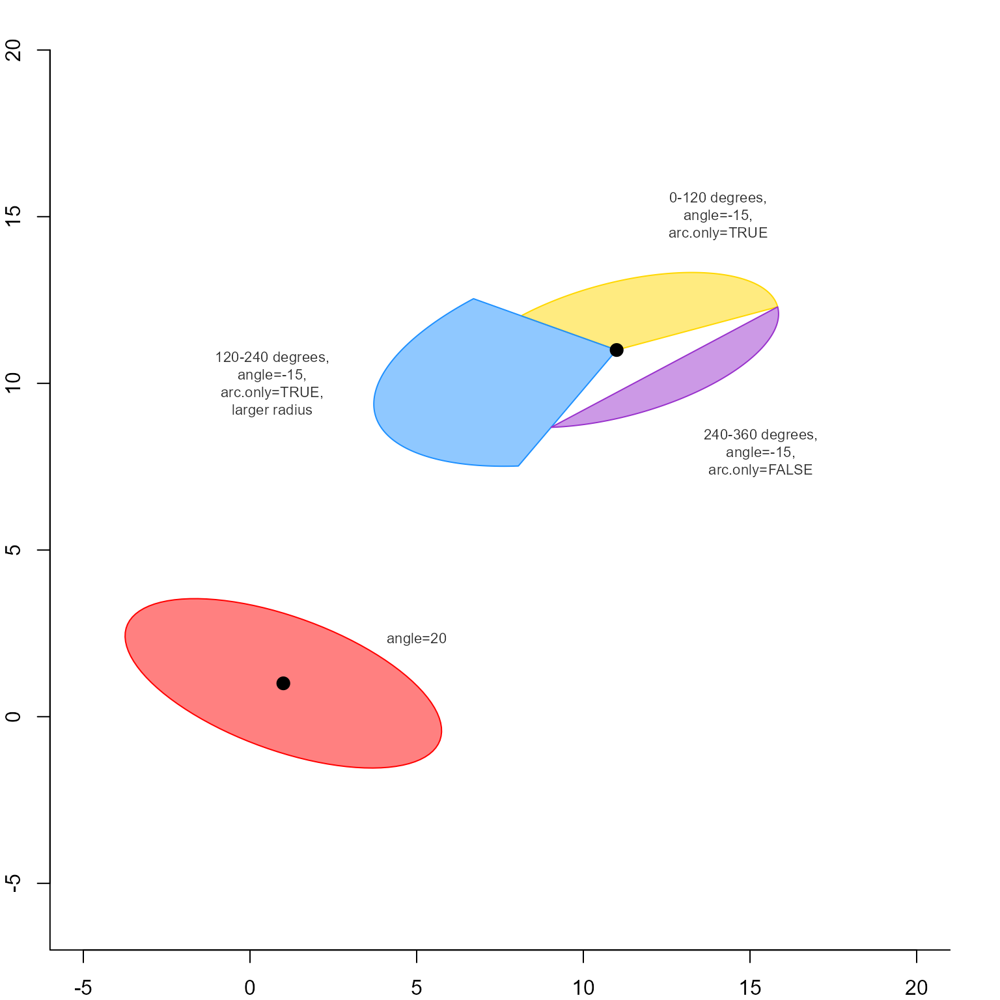

Draw ellipse
Usage
drawEllipse(
x,
y,
a = 1,
b = 1,
angle = 0,
segment = NULL,
arc.only = TRUE,
nv = 100,
deg = TRUE,
border = NULL,
col = NA,
lty = 1,
lwd = 1,
draw = TRUE,
...
)Arguments
- x, y
numericcoordinates, where x can be a two-column numeric matrix of x,y coordinates.- a, b
numericvalues indicating x- and y-axis radius, before rotation ifangleis non-zero.- angle
numericvalue indicating the rotation of ellipse.- segment
NULL or
numericvector of two values indicating the start and end angles for the ellipse, prior to rotation.- arc.only
logicalindicating whether to draw the ellipse arc without connecting to the center of the ellipse. Setarc.only=FALSEwhen segment does not include the full circle, to draw only the wedge.- nv
numericthe number of vertices around the center to draw.- deg
logicalindicating whether inputangleandsegmentvalues are in degrees, ordeg=FALSEfor radians.- border, col, lty, lwd
arguments passed to
graphics::polygon().- draw
logicalindicating whether to draw the ellipse.- ...
additional arguments are passed to
graphics::polygon()whendraw=TRUE.
Details
This function draws an ellipse centered on the given coordinates, rotated the given degrees relative to the center point, with give x- and y-axis radius values.
See also
Other jam igraph functions:
communities2nodegroups(),
edge_bundle_bipartite(),
edge_bundle_nodegroups(),
fixSetLabels(),
flip_edges(),
get_bipartite_nodeset(),
highlight_edges_by_node(),
igraph2pieGraph(),
label_communities(),
mem2cnet(),
mem2emap(),
nodegroups2communities(),
rectifyPiegraph(),
removeIgraphBlanks(),
subsetCnetIgraph(),
subset_igraph_components(),
sync_igraph_communities()
Examples
par("mar"=c(2, 2, 2, 2));
plot(NULL,
type="n",
xlim=c(-5, 20),
ylim=c(-5, 18),
ylab="", xlab="", bty="L",
asp=1);
xy <- drawEllipse(
x=c(1, 11, 11, 11),
y=c(1, 11, 11, 11),
a=c(5, 5, 5*1.5, 5),
b=c(2, 2, 2*1.5, 2),
angle=c(20, -15, -15, -15),
segment=c(0, 360, 0, 120, 120, 240, 240, 360),
arc.only=c(TRUE, FALSE, FALSE, TRUE),
col=jamba::alpha2col(c("red", "gold", "dodgerblue", "darkorchid"), alpha=0.5),
border=c("red", "gold", "dodgerblue", "darkorchid"),
lwd=1,
nv=99)
points(x=c(1, 11), y=c(1, 11), pch=20, cex=2)
jamba::drawLabels(x=c(12, 3, 13, 5),
y=c(14, 10, 9, 2),
labelCex=0.7,
drawBox=FALSE,
adjPreset=c("topright", "left", "bottomright", "top"),
txt=c("0-120 degrees,\nangle=-15,\narc.only=TRUE",
"120-240 degrees,\nangle=-15,\narc.only=TRUE,\nlarger radius",
"240-360 degrees,\nangle=-15,\narc.only=FALSE",
"angle=20"))
